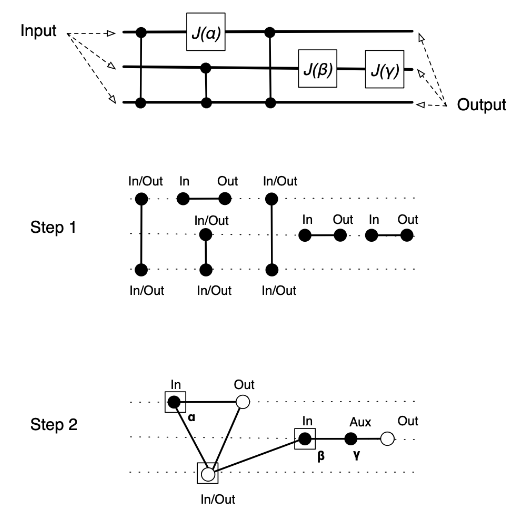

Exploring the Optimization of Measurement-Based Quantum Circuits Using ZX-Calculus
2024 Monroe Scholar Summer Research Project, funded by the W&M Monroe Scholar program
Presentation for the William & Mary Fall 2024 Research Symposium
Quantum computing developed out of the realization that decreasing transistor sizes were quickly approaching physical limitations. Quantum computing surpasses these limitations by using subatomic particles to store information. These particles are termed qubits, and exist in a superposition of two states, 0 or 1. The state of a qubit is only determined when it is measured, as it is so delicate that performing the measurement causes the qubit’s superposition to collapse to a single value. Gate-model quantum circuits were the first implementation of quantum computing, and are similar to traditional computing circuits. However, this implementation does not really take into account the properties of quantum circuits. Measurement-based quantum computing, or MBQC for short, takes a different approach. Measurements, rather than gates, are performed on a cluster state of qubits to implement quantum computations. Since MBQC is a relatively new method of quantum computing, there is significant potential for optimizing the compilers that map quantum circuits to desired hardware, such as photon clusters (Li et al., 2023). This research explores the optimization potential of ZX-calculus, a circuit diagramming language, and lays out an end-to-end method of applying ZX-calculus to MBQC.
To optimize a measurement-based quantum circuit with ZX-calculus, a quantum circuit must first be in measurement pattern form. Measurement patterns require an entangled set of qubits upon which measurements are applied. Converting an initial circuit from gate-model form to this entangled resource state is straightforward and based on the equivalence of quantum gates to measurement patterns. The universal quantum gate set consists of fundamental quantum gates that can be used to construct more complex gates. The universal quantum gate set consists of the X, Y, Z, H, and CNOT gate (Vazirani, 2018). The effect of applying the single-qubit gates X, Y, Z, and H, can be conceptualized as rotations of the qubit along the Bloch sphere. The Bloch sphere is a standard three-axis, three-dimensional sphere, except the positive Z axis represents the 0 state, the negative Z axis represents the 1 state, and the X axis represents an equal superposition of the 0 and 1 state (Vazirani, 2018).
Fig. 1. Visualization of the Bloch sphere and key states, a three-dimensional geometric representation of a two-dimensional quantum system.
The universal quantum gate set can be represented by the set U, where U = {J(α), ∧Z}. J(α) is a rotation of angle α, and ∧Z is the two-qubit entangling CNOT gate (Broadbent & Kashefi, 2007). The elements in the set U are equivalent to the MBQC measurement patterns described by the equations below.
Xjsi is a dependent correction on qubit j based on the resultant measurement si of qubit i, obtained by the measurement of qubit i via Mi-α. i and j are temporally sequential qubits (Broadbent & Kashefi, 2007).
These two equations are derived from P = eiαJ(0)J(β)J(γ)J(δ), where P is an arbitrary single-qubit gate (Broadbent & Kashefi, 2007). This is due to the fact that every single-qubit rotation θ can be decomposed into 3 Euler angles β, γ, and δ.
The creation of the entangled resource state can also be graphically represented.

Fig 2. An initial circuit in gate-model form is shown and graphically transformed into its corresponding resource state by replacing each ∧Z gate by a vertical edge, and each J gate with a horizontal edge. Vertices are then contracted and labeled, with input qubits being represented by a boxed vertex and output qubits represented by a white vertex in the final graph. The black qubits in the final graph are measured with the labeled angles (Broadbent & Kashefi, 2007).
After the entangled resource state is created, a single-qubit gate can be implemented as a single-qubit measurement by expanding upon the concept of single-qubit teleportation.
Fig 3. The gate-model implementation of fundamental quantum teleportation is shown as the initial circuit state. Certain gates are then replaced and measurement operations are applied to create an entangled state. Measuring this entangled gate as specified corresponds to the application of the single-qubit gate HZ(α). To complete the implementation of any arbitrary rotation P(θ), this process can be concatenated three times to create the final measurement sequence displayed by the final circuit diagram (Kok, 2010).
ZX-calculus, a diagramming language used to represent and manipulate measurement-based quantum circuits, can now be applied.
Fig 4. Translating a quantum computation into its ZX-diagram format is a straightforward process where operations are replaced by their corresponding ZX symbols. The ZX-diagram can then be rearranged and simplified using ZX-rewrite rules (Wetering, 2020).
Fig 5. A single-qubit Z rotation gate is translated into a ZX-diagram through the rules provided by Fig. 4. The Z gate is essentially replaced by its corresponding ZX symbol, and then expanded using ZX-rewrite rules until the effect of the Z rotation gate is implemented by a series of measurements (Stollenwerk & Hadfield, 2024).
The measuring pattern for ZX-diagrams can be directly derived from the diagram.
Fig 6. The final ZX-diagram for an implementation of QAOA in measurement-based computing form is shown with its corresponding measurement pattern. u and v are two arbitrary qubits, the n’s are the measurements from the previous layer, and the m’s are the measurements from the current QAOA layer. The primes indicate different measurement outcomes (Stollenwerk & Hadfield, 2024).
Fig 7. The simplification of an arbitrary circuit with ZX-calculus rewrite rules can be seen above for the example gate-model circuit above and its equivalent ZX-diagrams (Staudacher, 2021).
The final ZX-diagram can be converted back into a gate-model circuit to clearly see the reduction of gates by applying an extraction process.
Fig. 8. The extraction process consists of dividing a ZX-diagram into an unextracted and extracted section so that they are divided by a set of spiders, known as a frontier. The spiders are pulled through the unextracted section to the extracted selection by working with the biadjacency matrix and applying the corresponding row operations to the diagram. This process is repeated until only input spiders are left in the unextracted section. The extracted section is now in a circuit-like form and can be directly converted to a circuit by replacing equivalent components (Staudacher, 2021).
The circuit in Fig. 8 is equivalent to the circuit in Fig. 7, except it uses nine less single-qubit gates and two less two-qubit gates.
The application of ZX-calculus to measurement-based quantum circuits is straightforward, and has significant optimization potential for compilers that map quantum circuits to computational hardware (Li et al., 2023). Working towards the optimization of real-world circuits with ZX-calculus, researchers are implementing ZX-diagram simplification with code and testing it on quantum circuits that implement computing problems from fields such as chemistry, machine learning, and cryptography (Staudacher, 2021). There is also significant potential for extending the ZX-calculus method, as it can be guided by heuristics such as maximizing the resultant number of Hadamard wires (Staudacher, 2021).
References
Broadbent, A., & Kashefi, E. (2007). Parallelizing Quantum Circuits.
Kok, P. (2010). Five Lectures on Optical Quantum Computing. https://doi.org/10.1007/978-3-642-02871-7 7
Li, Y., Pawar, A., Azari, M., Guo, Y., Zhang, Y., Yang, J., Seshadreesan, K. P., & Tang, X. (2023). Orchestrating Measurement-Based Quantum Computation over Photonic Quantum Processors. https://doi.org/10.1109/DAC56929.2023.10247944
Staudacher, K. (2021). Optimization Approaches for Quantum Circuits using ZX-calculus (thesis). Retrieved August 31, 2024, from https://www.mnm-team.org/pub/Diplomarbeiten/stau21/PDF-Version/stau21.pdf.
Stollenwerk, T., & Hadfield, S. (2024). Measurement-Based Quantum Approximate Optimization.
Vazirani. (2018). Quantum Computing. YouTube. https://www.youtube.com/playlist?list=PLXEJgM3ycgQW5ysL69uaEdPoof4it6seB
Wetering, J. van de. (2020). ZX-Calculus for the Working Quantum Computer Scientist.
Broadbent, A., & Kashefi, E. (2007). Parallelizing Quantum Circuits.
Kok, P. (2010). Five Lectures on Optical Quantum Computing. https://doi.org/10.1007/978-3-642-02871-7 7
Li, Y., Pawar, A., Azari, M., Guo, Y., Zhang, Y., Yang, J., Seshadreesan, K. P., & Tang, X. (2023). Orchestrating Measurement-Based Quantum Computation over Photonic Quantum Processors. https://doi.org/10.1109/DAC56929.2023.10247944
Staudacher, K. (2021). Optimization Approaches for Quantum Circuits using ZX-calculus (thesis). Retrieved August 31, 2024, from https://www.mnm-team.org/pub/Diplomarbeiten/stau21/PDF-Version/stau21.pdf.
Stollenwerk, T., & Hadfield, S. (2024). Measurement-Based Quantum Approximate Optimization.
Vazirani. (2018). Quantum Computing. YouTube. https://www.youtube.com/playlist?list=PLXEJgM3ycgQW5ysL69uaEdPoof4it6seB
Wetering, J. van de. (2020). ZX-Calculus for the Working Quantum Computer Scientist.
Built by Rachel Huang on a very late night.